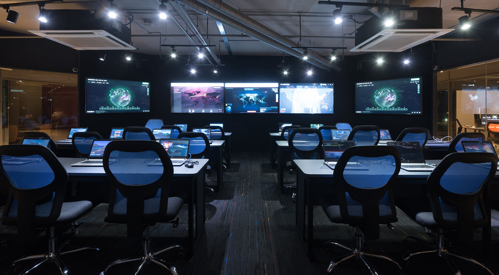
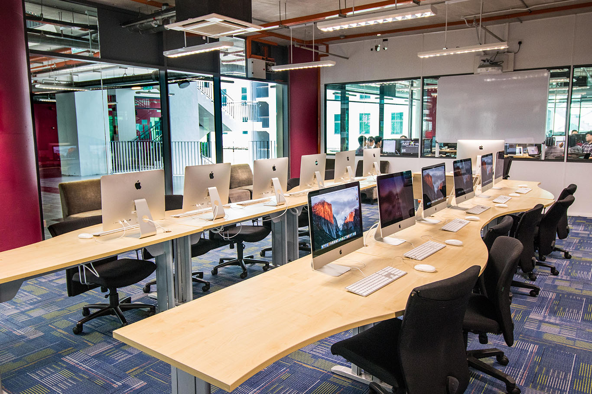
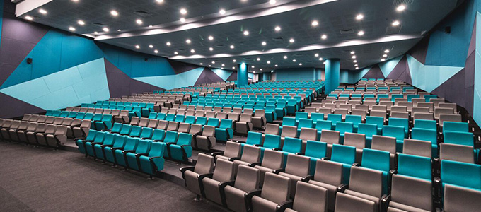
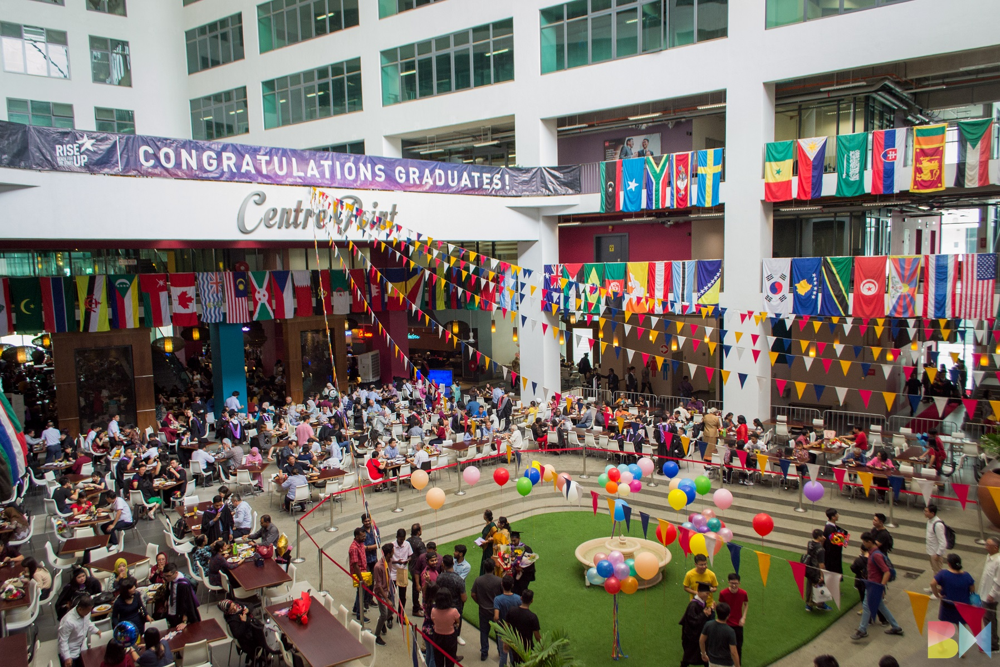
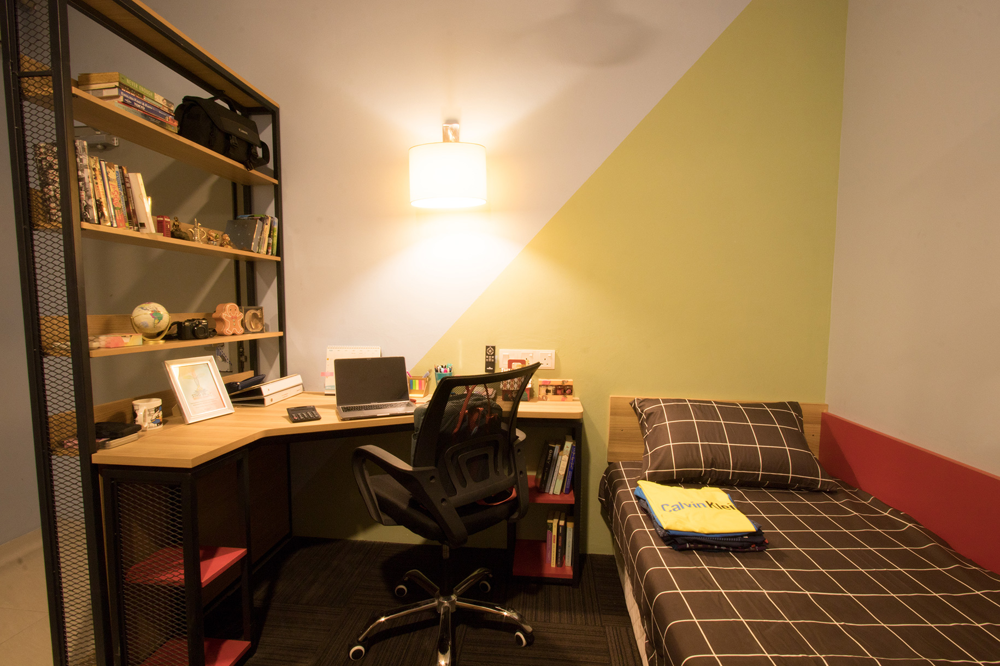
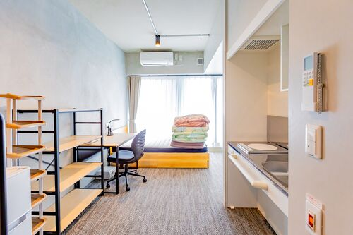

APU operates on an 11.7-acre urban campus at Technology Park Malaysia—less than 16 km from KLCC. Smart classrooms, advanced IT and engineering labs, and multimedia suites support hands-on learning. The library offers a wide collection of print and digital resources (e.g. Proquest, Emerald, ACM), plus study areas for both group and individual work.
  Several on-campus cafeterias and food outlets serve a rich mix of Malay, Chinese, Indian, Arabic, Western and other cuisines. Menus emphasize balanced, healthy meals at student-friendly prices in clean, well-maintained settings. The cafeterias also double as popular social spaces.
APU offers on-campus residences with single and shared en-suite rooms, featuring water heaters, study desks, bed divans, Wi-Fi, and fridges in premium rooms. A key advantage is 24/7 security and card-access control. Prices range from approximately RM 920 to RM 1,650/month depending on room type. Common facilities include laundry, shared kitchens and lounges. Residents also have access to campus amenities like the SweatZone gym and swimming poolCommon facilities include laundry, shared kitchens and lounges. Residents also have access to campus amenities like the SweatZone gym and swimming pool.
 APU hosts over 14,000 students, with roughly 45% international students from more than 130 countries—making it one of Malaysia’s most multicultural universities. Diverse student associations, societies, and events encourage intercultural exchange, innovation, sports, community engagement and collaboration. APU also supports on-campus part-time work opportunities and strong student services including counseling, career guidance, and academic advising.